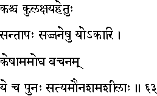
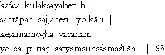

|

|
Verse 63 - Meaning:
Q:What (kas-ca) leads to the decay (ksaya-hetuh) of families and communities (kula) ?
A:The persecution (yo-akaari) of holy men. (santaapah-sajjanesu)
Q:Whose words are never falsified (kesam-amogha vacanam) ?
A:Of those who are in the habit of speaking only truth, (satya) who observe silence (mauna) and who are always patient (sama-siilaah) .
|